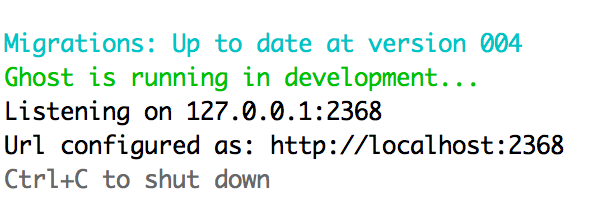
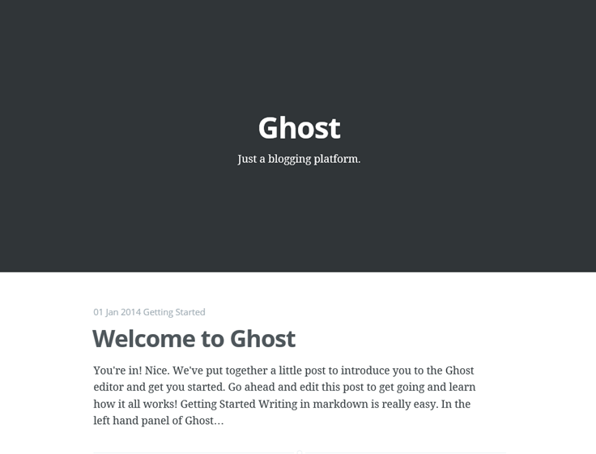

Creating a Ghost Blog Using Github Pages
The Problem
While going through the process of setting up this blog I stumbled on a number of blog posts that, although helpful, were simply a list of code-snippets and commands to punch into the console without any explanation. Great for getting things going quickly but not that helpful when trying to understand what is going on under the hood, particularly when problems arise. So this post is an attempt to distill some of the knowledge out there and allow anyone trying to create a Ghost blog on Github to understand what they are doing every step of the way.
Setting Up For Success
First things first, make sure you have Python and Ruby Installed on your system. If either of the following commands do not work then follow the links and install them on your system.
ruby -v
python --version
You then need to open up your terminal and install a package manager called Brew. This is simply a small program that will allow you to grab the other programs you need in order to run and update your blog. Following the guide on the brew site all you need to do is run the following in your terminal:
ruby -e "$(curl -fsSL https://raw.githubusercontent.com/Homebrew/install/master/install)"
Once this has installed properly we need to get the following packages with our newly installed package manager.
pipanother package manager used to get python packages.wgetsoftware that can retrieve files using the HTTP, HTTPS and FTP protocols.nodeThe server side version of Javascript that allows you to run code in this language outside of the browser.busterA Python program that takes your ghost blog and turns it into static pages that can then be uploaded to GitHub.
To grab them use the following:
easy_install pip
brew install wget
brew install node
pip install buster
Getting Ghost
Now that we have everything ready to go we can hop across to the Ghost site and download our blogging platform.
Once you have downloaded the file and unzipped it I would suggest moving it to the file location from which you wish to run everything. Use the following in the terminal putting in the name of the directory that you want to move ghost to.
mv ~/Downloads/ghost-0.7.4 ~/YourTargetDirectory/ghost-0.7.4
Once this move is complete you will want to move into your ghost folder.
cd ~/YourTargetDirectory/ghost-0.7.4
Now we can setup the ghost program itself. When you installed node it also came along with npm - node package manager. Inside the ghost folder is a file called package.json that lists all the packages/programs/dependencies that ghost requires to run. By running the following you tell npm to grab all of these and install them for you.
npm install
At this point you have done everything that is required to have a Ghost blog and run it on your own computer. Lets Have a look, run the command:
npm start
And you should see something similar to the following in your terminal:

Open a browser, Chrome, Safari etc. are all alright to use and type the URL into the address bar and you should see something like this:

In order to access and edit the blog just extend the url to: http://localhost:2368/ghost/. Congratulations you have a working blog running on your computer. Now to get it setup on the web for Free.
Ghost To GitHub
To Ensure that you can get your blog onto GitHub you first need to have a Github account and git installed (if you don't simply follow the link and set one up and follow the instructions to ensure that git is installed).
Once on your GitHub page create a new repository called: yourname.github.io. Now back in the terminal create a new directory locally that you would like to store your static pages in and then move into it. For example:
mkdir ~/YourTargetDirectory/ghost-0.7.4/yourname.github.io
cd ~/YourTargetDirectory/ghost-0.7.4/yourname.github.io
For the next few steps and in order to keep things running in the future it can help to understand exactly what it is that buster does. Simply put when directed to it goes to a website and scrapes through the information it contains and turns these into static pages. It's important to know this for two reasons. Firstly your local ghost blog must be running for it to have anything to grab and secondly if you don't tell buster what to grab correctly it wont work.
Now that the theory is out of the way we can keep going. In your newly created folder run:
buster setup
This will get buster ready to do its job and ask you for the github URL that you intend to use to host your blog (This is the repository that we created earlier) and will look something like this: https://github/yourname/yourname.github.io.git.
Now run:
buster generate --domain=http://127.0.0.1:2368
This tells buster to scrape the pages located at your locally running ghost blog with the --domain option being the key to pointing buster in the right direction.
Once it has finished buster will place the newly created static pages inside a folder called ... static!
cd static
Once inside the folder it is simply a case of pushing your files up to github and voila your blog will be up and viewable on the big world wide web. To do this simply run the following:
git add -all
git commit -m "Initial Commit"
git push origin master
If you now visit yourname.github.io you should now see your blog up and running. Congratulations!
Running Your Blog
As a parting note, now that you have all the tools you need to keep things going the commands that you need to know and run in order to update a your blog are as follows.
Ensure you are in your ghost directory.
cd ~/YourTargetDirectory/ghost-0.7.4
Then startup your local blog.
npm start
Once you have stopped blogging away and want to update your online blog on Github simply run the following as shown earlier:
buster generate --domain=http://127.0.0.1:2368
cd static
git add -all
git commit -m "Uploading a new blogpost"
git push origin master
And there you have it. A great blog setup and hosted completely for free!